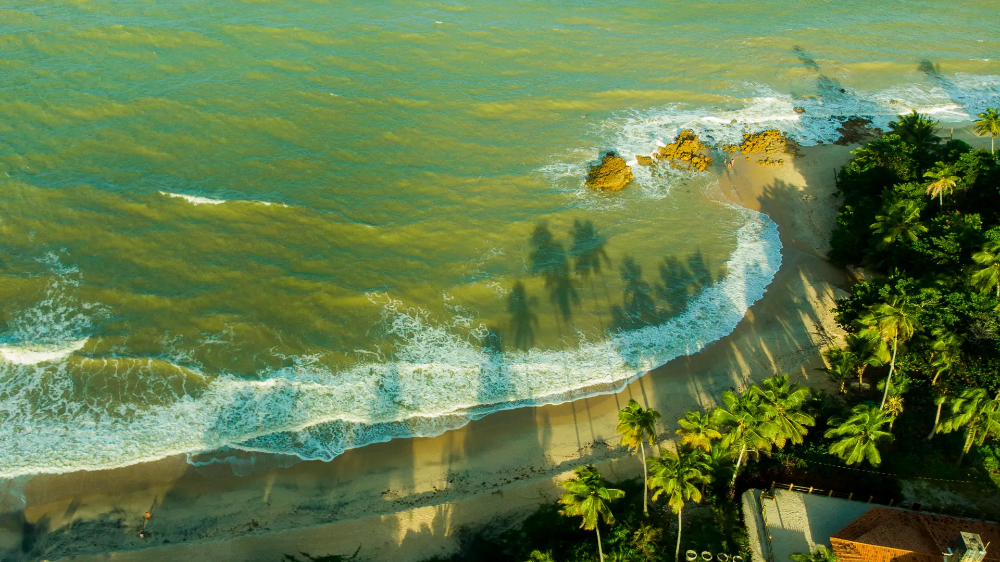
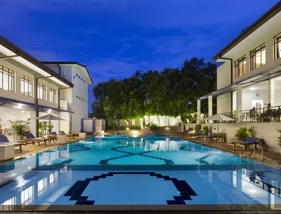
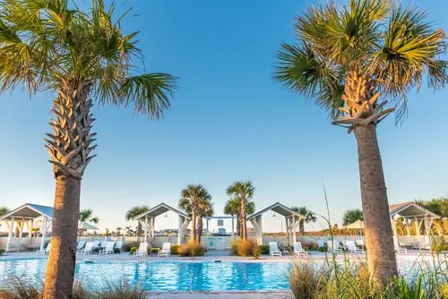
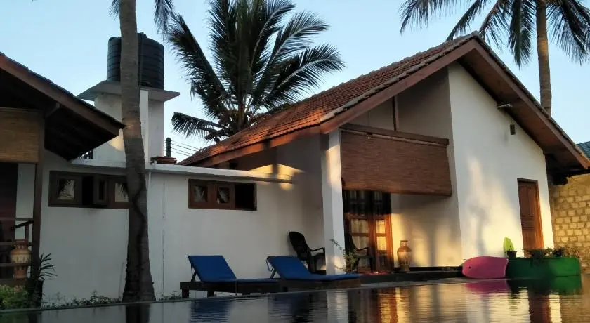

Sri Lanka's tropical beaches are some of the most beautiful beaches in the world with a very diverse terrain including beaches with golden colored sand, beaches littered with coral reef, beaches with bays and coves to perfect instagrammable beaches, there are wide variety of beaches in Sri Lanka and this is a major factor which attracts numerous tourists from all over the world to Sri Lanka.
The following are some of the best beaches in Sri Lanka.
The best time to visit beaches
The start of May signals the coming of the Yala monsoon rain season across the country which lasts until August, but this is the erfect time to visit the beaches in Sri Lanka as this time period is considered to be the low season and often results in less crowded beaches and cheaper accomadations closer to the beach.
Arugam Bay

Arugam Bay, a long stretch of sand filled sparsely with coconut palm trees entices visitors with its intrinsic beauty.
Located in the southeast coast of the island Arugama Bay draws visitors because it is a popular surfing spot in Sri Lanka and is the only international surf competition venue in Sri Lanka.
Many international surfing competitions have been hosted in Arugam Bay. Arugama Bay is rated as one of the top ten surf destinations in the world. Due to its popularity as a surfing destination, Arugam Bay hosts numerous surf schools and board rental spots along its beaches.
Not only does Arugam Bay have pretty beaches and surfing activities but is also is in close proximity to Sri Lanka's most famous wildlife park, the Yala East National Park.
Accomadation close to Arugam Bay
The Blue Wave Hotel

The hotel is located approximately 200m from Arugam Bay Beach.
The Blue Wave Hotel features accommodation with a restaurant, free private parking, an outdoor swimming pool and a fitness centre. Other facilities which are provided include a bar, a shared lounge and a garden.
The hotel offers a 24-hour front desk, room service and currency exchange for guests. The hotel will provide guests with air-conditioned rooms offering a desk, a kettle, a fridge, a minibar, a safety deposit box, a flat-screen TV, a balcony and a private bathroom with a shower. The Blue Wave Hotel rooms come with a sun terrace.
The hotel also offers billiards and table tennis, and the area is popular for cycling.
Located at about a minute walking distance from the beach the Garden Beach Hotel offers a sun terrace and views of the garden.
The hotel offers an on-site restaurant for guests to enjoy. All rooms are fitted with private bathrooms with some rooms featuring a terrance or a balcony to enjoy the wonderful view after a busy day, and free wifi is available throughout the property
The hotel also has a private beach.
Situated at Arugam Bay at a few steps away from the beach Arugam Roccos has a outdoor swimming pool and a private beach area for guests to enjoy.
There is also a on-site restaurant for guests to try out authentic Sri Lankan and international cuisine.
All rooms include views of the pool, a beautiful garden and the wonderful ocean.
The premises is in close proximity to many historical and religious sites, as well as the Kumana National Park.
Beruwala Beach, also known as 'The Golden Mile' because of its golden colored sandy beach is located in the southwestern coast of the island.
The golden sand dunes makes Beruwala beach perfectly picturesque. Beruwala beach does not only offer a beautiful scenery for visitors to feast their eyes with but also numerous fun activities to partake in. The beach makes it a perfect host for water sport activities such as snorkelling, deep-sea fishing, parasailing, diving, windsurfing, jet-skiing, and water skiing.
Accomadation close to Beruwala Beach
Sunflower Beach Resort

Situated in Beruwala the Sunflower Beach Resort conisists of a bar, garden, restaurant, and free wifi.
Some of the rooms at resort include a terrace or a balcony. The establishment also includes a currency exchange service for guests.
The hotel offers a in-house restaurant, private parking space, bar, and a garden.
The rooms come with air-conditioning and terrace with a direct view at the sea.
Offering a spa wellness centre, a massage parlour and a restaurant, Sky and Sand Guesthouse is located in Beruwala with close proximity to the beach.
On site activities include cycling, fishing and hiking.
The hotel also provides guests with personalised tour packages to visit nearby places of significance such as Pancha Kapaduwa Temple or Fort Galle, or to partake in activities such as diving or kite surfing.
Considered as one of the best beaches in Asia, Nilaveli is located on the eastern coast of Sri Lanka, with pure white sand.
Nilaveli is one of the cleanest beaches in Sri Lanka making it very appealing to visitors.
The beach is well suited for surfing, diving, snorkelling, and windsurfing. Visitors can also go whale watching with whale sightings present throughout the whole year. the beach is close to Koneawaram Temple, a remarkable religious site in Sri Lanka.
Accomadation close to Nilaveli Beach
Bella Nilaveli Beach Restort

Located close to the beach, this establishment offers comfy and peaceful accomadation.
The hotels features a juice bar, Italian and fish restaurant which has tasty Sri Lankan and continental food, and a bar which serves wine and a variety of cocktails.
Activites such as snorkelling, paddling and kayaking can be arranged via the resort front desk.
This stylish resort is surrounded by flora which makes it look and feel like a luxurious tree house.
The resort has a private pool, an in-house restaurant operated by exprienced chefs who serve international and local dishes. The resort also offers entry to activities such as whale watching, snorkelling, and tours through Trincomalee City.
The establishment has a French-Sinhala fusion theme which is present throughout many aspects in the resort such as room decorations and cuisine.
The resort consists of nine air-conditioned and luxurious rooms. The resort has a outdoor swimming pool, massage center and a meditation center.